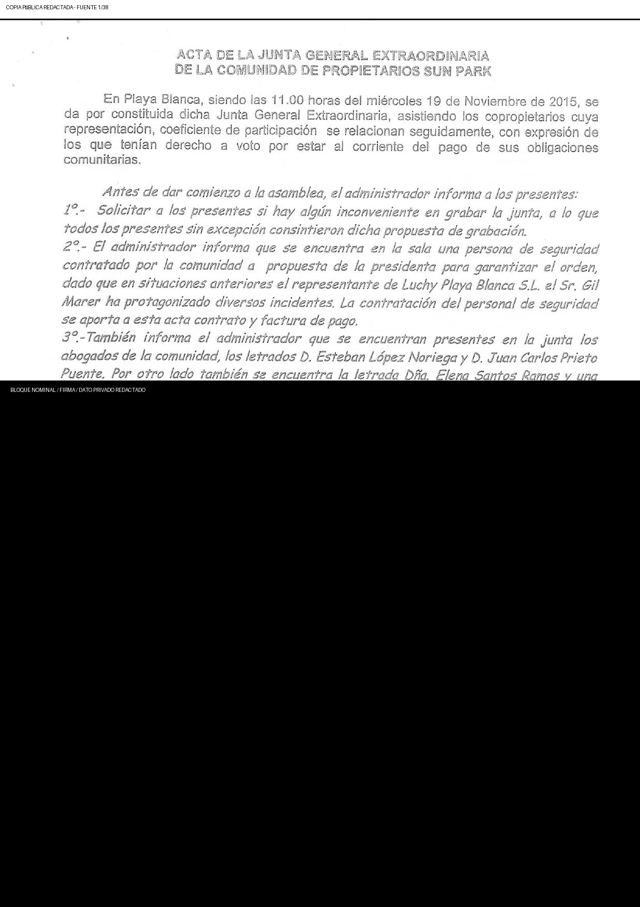
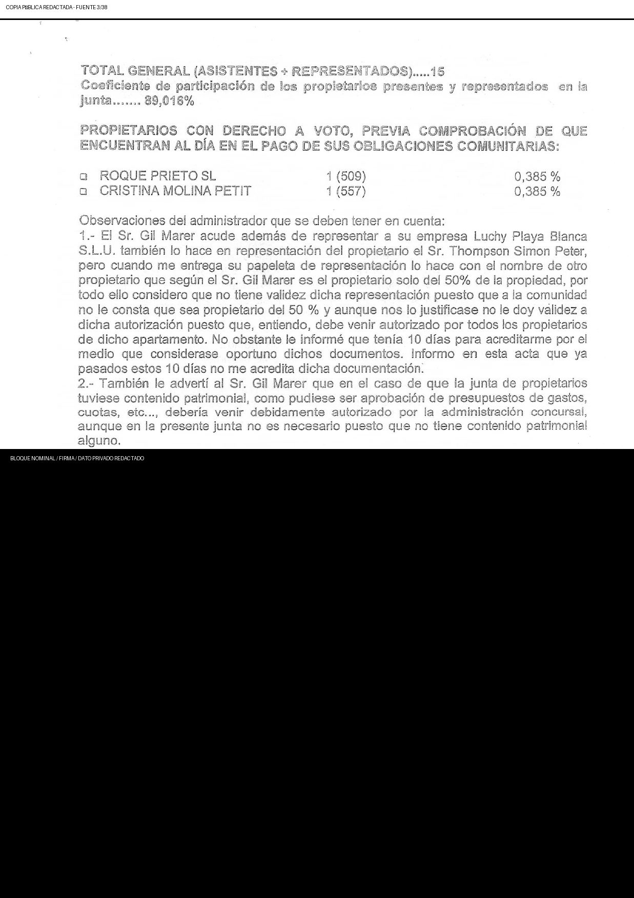
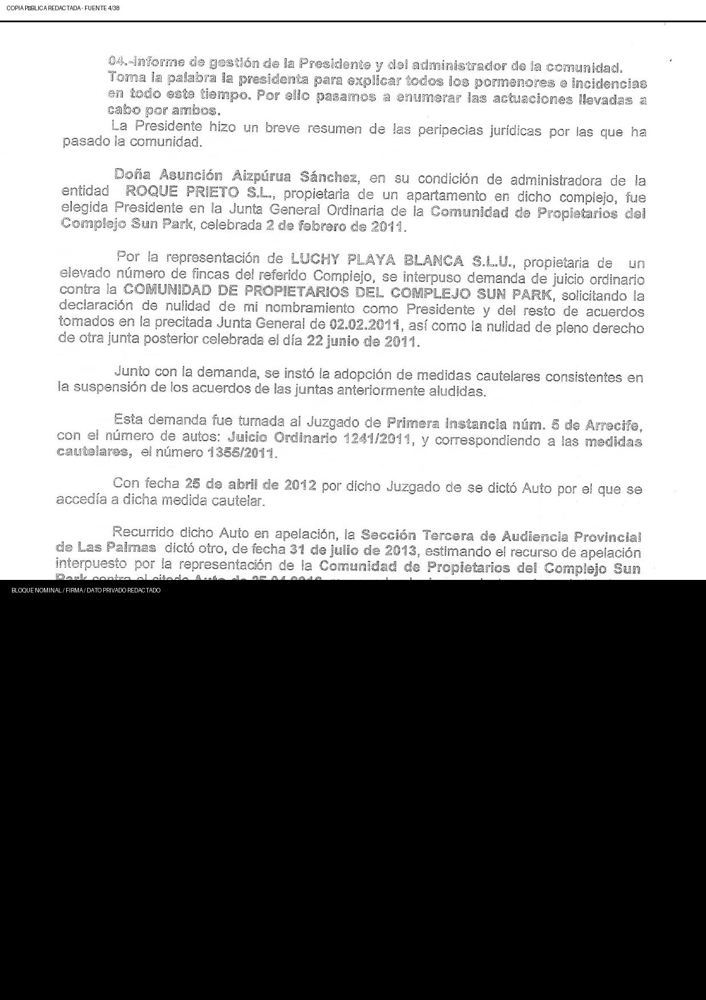
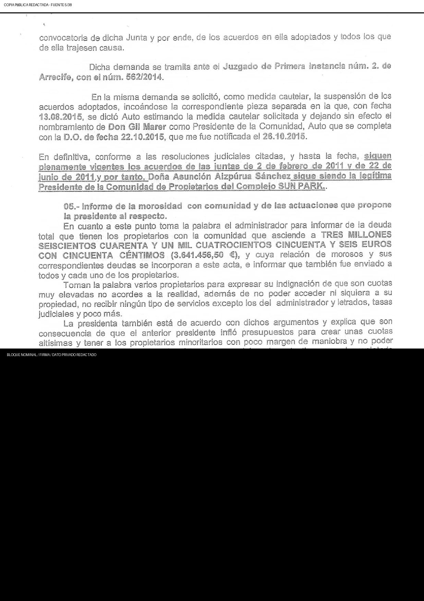
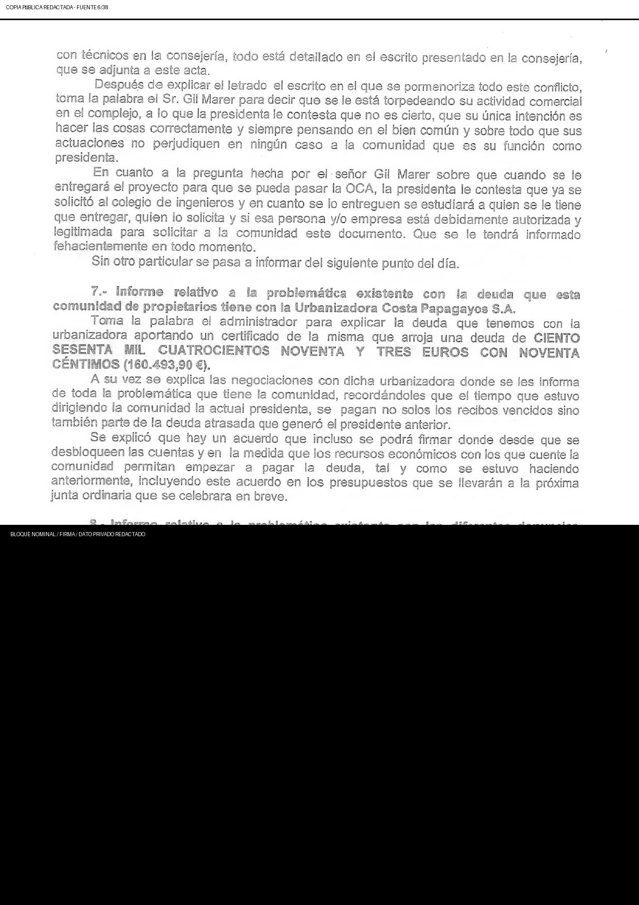
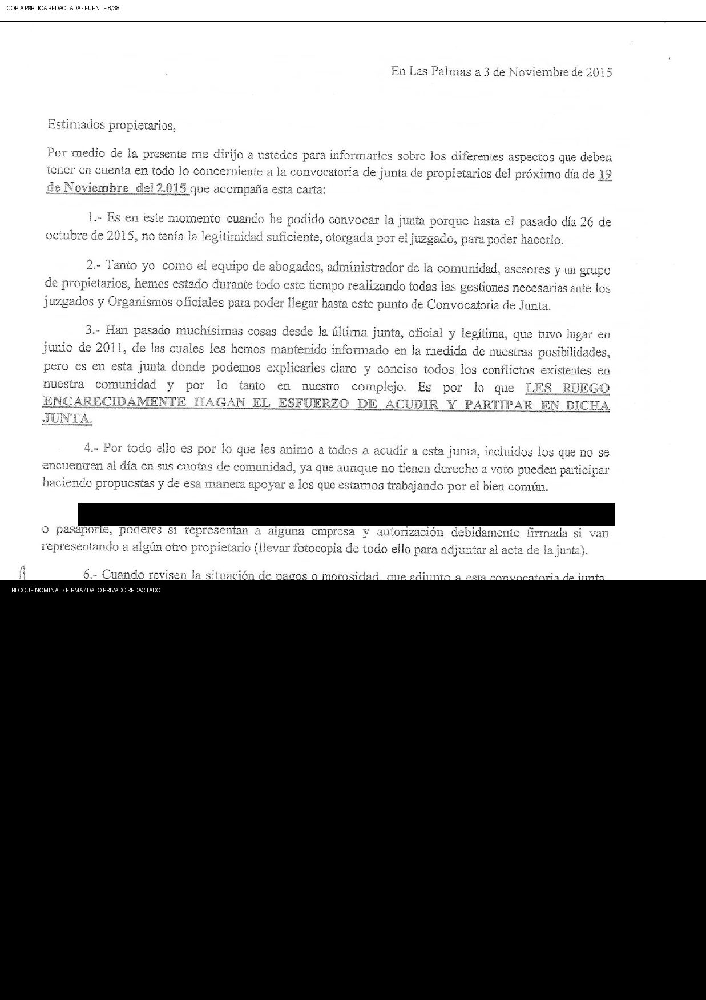

SP-ACTA-2015-11-19 · 2015-11-19
19 noviembre 2015 · Comunidad/Pamanil
Perímetro adverso alegado · AAS/FMMM/Cogolludo/Pamanil
C1 Adverso alegado · AAS → FMMM/Cogolludo/PamanilPrimera secuencia atribuida por Gil: AAS → FMMM/Cogolludo/Pamanil. Cada persona, sociedad, cargo, representación y acto se prueba por separado; no es un hallazgo de culpabilidad.
Capacidad y secuencia atribuidas
Mandatos separados; transiciones visibles.
Secuencia atribuida por Gil Marer y clasificación documental del proyecto. Cada persona, sociedad, cargo, representación y acto se mantiene separado y debe probarse fuente por fuente. No es un hallazgo judicial de conspiracion, fraude, finalidad criminal, responsabilidad o culpabilidad.
Ninguna capacidad específica documentada
Las fuentes controladas de esta familia no prueban una capacidad propia del evento.aas-fmmm-cogolludo-pamanil-overlap · AAS → FMMM_COGOLLUDO_PAMANIL
Control de identidad: Patricia Isabel Domínguez Montelongo y Laura Patricia Acosta Matos son personas distintas; nunca se usa 'Patricia' para fusionarlas. Límite de inferencia: Una función en Pink Canary Services, una participación personal o una declaración posterior no se transforma en representación de la Comunidad, CEXP, LPB, Aweswell ni otra entidad para este evento.
Autoría y control documental
Convocar, presidir, redactar y custodiar no son la misma función.
C · Línea adversa alegada · disidentes → Acosta MatosC1 · C1 identifica la fase Aizpurúa/Molina–Roque Prieto/FMMM/Pamanil–Cogolludo; C2 identifica la fase posterior Acosta Matos/CAM. La flecha expresa la secuencia atribuida por Gil y nodos documentados, no sucesión jurídica, dirección común, concierto, ilicitud o culpabilidad ya probados.
Regla: Asistencia, representación, financiación, beneficio posterior o firma no convierten por sí solos a una persona en convocante, presidente, autor o custodio.
Control histórico LPH
Cinco puertas: convocatoria → servicio → voto → ACTA → circulación.
La convocatoria/carta y el ACTA están localizados; la divergencia aproximada 89,02% representado / 0,770% con voto exige reconstrucción de deuda y voto.
Se controla una cadena de convocatoria, resumen de deuda y carta; autoridad y versión exacta por destinatario siguen abiertas.
LPH arts. 13, 16 · fuente localizada; prueba incompletaExiste cadena directa de circulación, pero faltan cabeceras nativas, lista completa, entrega y acuse por propietario.
LPH arts. 9.1.h, 16 · fuente localizada; prueba incompletaEl registro presenta una divergencia extrema entre representación y voto, basada en deuda cuya aritmética y soporte siguen abiertos.
LPH arts. 15, 17, 21 · preocupación facial / incumplimiento alegadoDos ACTAS de 38 páginas y dos extractos procesales distintos están separados; libro, audio y cotejo final permanecen abiertos.
LPH arts. 19, 20 · fuente localizada; prueba incompletaLa comunicación posterior está referida y el ACTA reaparece en circulación de 2018; envío directo completo, recepción y uso siguen abiertos.
LPH arts. 9.1.h, 18, 19, 21 · fuente localizada; prueba incompletaRedacción histórica: Redacción aplicable tras la modificación publicada el 27 junio 2013 y antes de la de 18 diciembre 2018, con control artículo por artículo. BOE →
Quién convocó o generó el registro
El ACTA identifica a Asunción Aizpurúa Sánchez como presidenta y a Francisco Matos Matas como administrador; registra seguridad contratada a propuesta de la presidenta.
Base de la clasificación
Pertenece a la fase AAS/FMMM/Cogolludo/Pamanil que Gil atribuye al perímetro adverso. Cada actor y capacidad se mantiene separado. La presencia y objeciones de Gil/LPB no convierten la reunión en una reunión promovida por su perímetro.
Abrir texto público redactadoPDF de edición textualFacsímil fuente expurgadoManifiesto de integridadProcedenciaRegistro de expurgaciónÍndice máquina de continuidadRegistro fuente y comunicaciones
Límite: Copia localizada; no es el libro diligenciado ni una copia certificada.
Familia documental
Cada aviso, ACTA, anexo, circulación, ejecución y uso conserva su propio ID.
Una entrada no convierte un correo en ACTA ni la recepción en autoridad, validez o intención.
SP-EVT-2015-11-03-CONVOCATION
2015-11-03–2015-11-18 · Resumen de deuda, convocatoria y carta de la presidenta
- Emisor / remitente
- Línea de trabajo de presidencia/administración de la Comunidad
- Capacidad
- Pretendidos emisores de la convocatoria comunitaria; remitentes/capacidades exactos dependientes de cada fuente
- Destinatarios
- Propietarios/destinatarios; lista completa y prueba de entrega no localizadas
- Órgano / convocante
- Comunidad de Propietarios · Carril presidencia/administración reflejado en ACTAS posteriores
- Procedencia
- Cadena directa de convocatoria/circulación y respuesta localizada
- Público / privado
- Nativo privado/metadatos aptos para publicación o derivado redactado
- Cuestiones abiertas
- Siguen abiertas las cabeceras nativas, los destinatarios/entrega completos, los hashes de adjuntos y las ediciones aptas para publicación
- Página / motivo
- La entrada canónica o la aparición secundaria enlazada evita duplicar una ruta autónoma y mantiene procedencia, estado público/privado y relaciones dentro de las familias documentales del evento.
- Relaciones
SP-EVT-2015-11-19-COM-MEETING
2015-11-19 · ACTA
- Emisor / remitente
- Comunidad de Propietarios
- Capacidad
- Funciones de presidencia y administración consignadas
- Destinatarios
- Propietarios/participantes; denominador completo de legitimación no resuelto
- Órgano / convocante
- Junta extraordinaria de la Comunidad de Propietarios · Asunción Aizpurúa Sánchez, presidenta; Francisco Matos Matas, administrador
- Procedencia
- Tres variantes fuente localizadas; copia de control digitalizada públicamente
- Público / privado
- Nativo privado/metadatos aptos para publicación o derivado redactado
- Cuestiones abiertas
- Siguen abiertas las diferencias entre variantes, los anexos, el audio, la aritmética de deuda, los poderes, los coeficientes y la ejecución
- Página / motivo
- La entrada canónica o la aparición secundaria enlazada evita duplicar una ruta autónoma y mantiene procedencia, estado público/privado y relaciones dentro de las familias documentales del evento.
- Relaciones
SP-EVT-2018-07-09-ACTA-CIRCULATION
2018-07-09 · Circulación por correo de ACTAS históricas
Abrir la entrada canónica del documento →
- Emisor / remitente
- Remitente privado; identidad minimizada en el registro público
- Capacidad
- Reenviador del documento; no se infiere verdad ni adopción
- Destinatarios
- Destinatario(s) privado(s); capacidad exacta incompleta
- Órgano / convocante
- No es un órgano de reunión · No aplicable
- Procedencia
- Correo directo y familias de adjuntos localizados
- Público / privado
- Nativo privado/metadatos aptos para publicación o derivado redactado
- Cuestiones abiertas
- Siguen abiertas las cabeceras nativas, la capacidad del destinatario, los hashes de adjuntos, el acuse de recibo, la respuesta y el uso posterior
- Página / motivo
- La entrada canónica o la aparición secundaria enlazada evita duplicar una ruta autónoma y mantiene procedencia, estado público/privado y relaciones dentro de las familias documentales del evento.
- Relaciones
SP-SRC-ACTA-2015-11-19-A
2015-11-19 · Extracto procesal relacionado con ACTA
- Emisor / remitente
- Portador de documento procesal; autor/emisor exacto dependiente de la fuente
- Capacidad
- Extracto procesal de cuatro páginas; no son ACTAS ni variante del ACTA
- Destinatarios
- Destinatarios procesales/denominador de notificación no resuelto
- Órgano / convocante
- No es un órgano de reunión; relacionado con la familia ACTA de 19-Nov-2015 · No aplicable a este extracto procesal diferenciado
- Procedencia
- Extracto procesal A de cuatro páginas localizado
- Público / privado
- Binario distinto conservado privadamente; sólo metadatos/relación aptos para publicación; no incluido en el facsímil de la copia de control del ACTA, la galería de páginas fuente ni la edición textual OCR
- Cuestiones abiertas
- Siguen sin resolverse la clasificación procesal exacta, el autor/emisor, el contexto de presentación/notificación y la relación con el ACTA
- Página / motivo
- La entrada canónica o la aparición secundaria enlazada evita duplicar una ruta autónoma y mantiene procedencia, estado público/privado y relaciones dentro de las familias documentales del evento.
- Relaciones
SP-SRC-ACTA-2015-11-19-B
2015-11-19 · Extracto procesal relacionado con ACTA
- Emisor / remitente
- Portador de documento procesal; autor/emisor exacto dependiente de la fuente
- Capacidad
- Extracto procesal de cuatro páginas; no son ACTAS ni variante del ACTA
- Destinatarios
- Destinatarios procesales/denominador de notificación no resuelto
- Órgano / convocante
- No es un órgano de reunión; relacionado con la familia ACTA de 19-Nov-2015 · No aplicable a este extracto procesal diferenciado
- Procedencia
- Extracto procesal B de cuatro páginas rotulado Bandama localizado
- Público / privado
- Binario distinto conservado privadamente; sólo metadatos/relación aptos para publicación; no incluido en el facsímil de la copia de control del ACTA, la galería de páginas fuente ni la edición textual OCR
- Cuestiones abiertas
- Siguen sin resolverse la clasificación procesal exacta, el autor/emisor, el contexto de presentación/notificación y la relación con el ACTA
- Página / motivo
- La entrada canónica o la aparición secundaria enlazada evita duplicar una ruta autónoma y mantiene procedencia, estado público/privado y relaciones dentro de las familias documentales del evento.
- Relaciones
SP-SRC-ACTA-2015-11-19-C
2015-11-19 · Copia fuente de ACTA
- Emisor / remitente
- Junta extraordinaria de la Comunidad de Propietarios
- Capacidad
- Órgano de reunión o evento registrado; las capacidades individuales dependen de cada fuente
- Destinatarios
- Destinatarios/participantes históricos según se consignan por separado; denominador completo original de destinatarios/notificación no resuelto
- Órgano / convocante
- Junta extraordinaria de la Comunidad de Propietarios · Constan Asunción Aizpurúa Sánchez como presidenta y Francisco Matos Matas como administrador.
- Procedencia
- Familia C de control Drive/correo de treinta y ocho páginas localizada
- Público / privado
- Fuente nativa/de control privada; facsímil raster redactado irreversiblemente, galería de páginas fuente, edición textual OCR y PDF de edición textual públicos disponibles en la página enlazada del evento
- Cuestiones abiertas
- Siguen abiertas las variantes del proveedor/anotadas, los anexos, el audio, la aritmética y el libro oficial
- Página / motivo
- La entrada canónica o la aparición secundaria enlazada evita duplicar una ruta autónoma y mantiene procedencia, estado público/privado y relaciones dentro de las familias documentales del evento.
- Relaciones
SP-SRC-ACTA-2015-11-19-D-ANNOTATED-38P
2015-11-19 · Copia fuente de ACTA
- Emisor / remitente
- Junta extraordinaria de la Comunidad de Propietarios
- Capacidad
- Órgano de reunión o evento registrado; las capacidades individuales dependen de cada fuente
- Destinatarios
- Destinatarios/participantes históricos según se consignan por separado; denominador completo original de destinatarios/notificación no resuelto
- Órgano / convocante
- Junta extraordinaria de la Comunidad de Propietarios · Constan Asunción Aizpurúa Sánchez como presidenta y Francisco Matos Matas como administrador.
- Procedencia
- Binario hermano anotado de 38 páginas con hash separado
- Público / privado
- Fuente nativa/de control privada; facsímil raster redactado irreversiblemente, galería de páginas fuente, edición textual OCR y PDF de edición textual públicos disponibles en la página enlazada del evento
- Cuestiones abiertas
- Salvo indicación separada, siguen abiertas la equivalencia material, la procedencia/autenticidad y la relación con el libro oficial
- Página / motivo
- La entrada canónica o la aparición secundaria enlazada evita duplicar una ruta autónoma y mantiene procedencia, estado público/privado y relaciones dentro de las familias documentales del evento.
- Relaciones
Auditoría evento por evento
Qué ocurrió, qué se comunicó y qué sigue abierto.
Ocurrencia, autoridad, quórum, voto, validez, ejecución, conocimiento, intención, causalidad y caracterización permanecen separados.
| Antes | Se circularon resumen de deuda, convocatoria y carta; consta respuesta de 18 de noviembre. |
|---|---|
| Conocimiento | La cadena prueba aviso en algunos canales, no recepción de todos. |
| Aviso y notificación | Paquete localizado; destinatarios, entrega y hashes siguen abiertos. |
| Omisión o exclusión alegada | Consta divergencia entre representados y habilitados; denominador de propietarios, coeficientes, deuda y exclusión no resuelto. |
| Convocante | Constan Asunción Aizpurúa Sánchez como presidenta y Francisco Matos Matas como administrador. |
| Órgano | Junta extraordinaria de la Comunidad de Propietarios. |
| Asistencia y representación | Asistencia/objeciones LPB/Gil son participación adversa, no prueba de convocatoria/control; poderes y coeficientes abiertos. |
| Propuestas y votación | Constan cuotas/deuda retroactivas y gobernanza; aritmética y derecho requieren conciliación. |
| Objeciones y reservas | Objeciones LPB/Gil deben permanecer; faltan anexos/audio. |
| ACTA y versiones | Familia de 38 páginas digitalizada; tres variantes requieren conciliación. |
| Circulación, recepción o retención | Se circuló en 2018; circulación original, recepción y retención no cerradas. |
| Ejecución o no ejecución | Deuda, certificados, reclamaciones y cuotas requieren facturas, libros, requerimientos y banca. |
| Uso posterior | 2016 y registros posteriores describen o usan esta historia. |
| Prueba contradictoria | Asistencia del proyecto no cambia perímetro; propuesta/registro no prueba ejecución lícita. |
| No probado | Siguen abiertos servicio, cuórum, derecho, deuda, variantes, autenticidad, validez y ejecución. |
Texto fuente público redactado
OCR secuenciado por página, con redacciones visibles.
No es transcripción pericial ni cotejo línea por línea. Los marcadores conservan la posición de material reservado o ilegible; una grafía OCR incompatible con una entidad jurídica controlada se normaliza y se marca.
# Junta General Extraordinaria de la Comunidad - 19 noviembre 2015
**Digitalización pública redactada, OCR-asistida y secuenciada por cada página de la copia localizada.**
- ID: `SP-ACTA-2015-11-19`
- Fecha atribuida: `2015-11-19`
- Órgano: Comunidad de Propietarios
- Fuente de control: `copia digital de trabajo`
- Páginas fuente: 38
- SHA-256 de la fuente privada: `d67f88c7243e84e1ceb89ecd0ef14dd4c199449d9fc6053282ddb7fc14b49c65`
- Estado: copia localizada digitalizada y publicada con redacciones irreversibles
## Advertencia de uso
No es el original, el libro diligenciado, una copia certificada ni una transcripción pericial. El texto cubre secuencialmente todas las páginas de la copia de control, pero el OCR no ha sido certificado línea por línea. Los datos personales, firmas, domicilios, contactos, identificadores, cuentas, tablas por propietario/finca/deuda/voto y anexos reservados se sustituyen por marcadores expresos.
**Control de variante:** Copia localizada; no es el libro diligenciado ni una copia certificada.
## Página fuente 1 de 38
ACTA DE LA JUNTA GENERAL EXTRAORDINARIA
DE LA GOMUNIDAD DE PROPIETARIOS SUN PARK
En Playa Blanca, siendo las 11.00 horas del miércoles 19 de Noviembre de 2015, se
da por consiituida dicha Junta General Extraordinaria, asistiendo los coprooietarios cuya
representacion, coeficiente de participacién se relacionan seguidamente, con expresién de
los que tenian derecho a voto por estar al corriente del pago de sus obligaciones
comunitarias.
Antes de dar comienzo a la asamblea, 2! administrador informa a los presentes:
i°- Solicitar a los presentes si hay algiin inconveniente en grabar la junta, a to que
todos los presentes sin excepcién consintieron dicha propuesta de grabacién,
2°- El administrador informa que se encuentra en la sala una persona de seguridad
contratado por la comunidad a propuesta de fa presidenta para garantizar el orden,
dado que en sijuaciones anteriores e/ representante de Luchy Playa Blanca SL. ef Sr. Gil
Marer ha protagonizade diversos incidentes. La contratacién del personal de seguridad
se aporta a esta acta contrato y factura de pago.
3°-También informa el administrador que se encuentran presentes en la junta los
abogados de la comunidad, los letrados D, Esteban Lépez Noriega y D. Tuan Carlos Prieto
Puente. Por otro lado también se encuentra la letrada Dita. Elena Santos Ramos y una
traductora ambas contratadas por e/ Sr. Gil Marer representante de Ja empresa Luchy
Playa Blanca $.L. copropietaria de esta comunidad de propietarios.
ORDEN DEL DIA
01.-Bienvenida y saludo de !a presidenta.
02.-Comprobacion de asistencia y quérum. Lectura del ndmero de propietarios
con Derecho a voto.
03.- Lectura del Acta de ia junta anterior (junio 2.011).Explicacién por fa
presidenta de las incidencias judiciales ocurridas con posterioridad a la misma.
04.- Informe de gestion de la presidente y del administrador de la comunidad.
05.-Informe de la morosidad de ja comunidad y de las actuaciones que propone
ja presidenta al respecto.
06.-informe relativo a la problematica existente con el corte de luz ejecutado por
la Consejeria de Industria, inspeccién de la OCA, reuniones de la presidenta en
la consejeria de Industria, escritos presentados en la misma y reste de
gestiones al respecto.
07.- Informe relativo a la problemdtica existente con la deuda que esta
\\.comunidad de propietarios tiene con la Urbanizadora costa Papagayo S.A.
\ 88.Informe relativo a la problematica existente con las diferentes denuncias
\ antes los Organismos Oficiales y procedimientos judiciales interpuestos contra
‘el comunero Luchy Playa Blanca SLU, Don Gil Marer y otros.
09.- Ruegos y oreguntas.
A continuaci6én se procede a confeccionar la lista de propietarios presentes o
representados que asisten a la reunion:
reunion:
t
## Página fuente 2 de 38
[CONTENIDO REDACTADO - LISTA ASISTENTES PROPIEDADES]
Objeto de la página: Relación nominal de asistentes, representaciones, fincas y coeficientes.
La página permanece contabilizada y secuenciada. Su imagen y texto íntegros se conservan únicamente en la copia privada de procedencia.
## Página fuente 3 de 38
TOTAL GENERAL (ASISTENTES + REPRESENTADOS).....15
Coeficiente de participacién de los propietarios presentes y representados en la
junta....... 89,016%
[LISTA NOMINAL DE PROPIETARIOS CON DERECHO A VOTO, FINCAS Y COEFICIENTES REDACTADA]
Total agregado de asistencia/representación que consta en la página: 89,016%.
Observaciones del administrador que se deben tener sn cuenta:
1.- El Sr. Gil Marer acude adem4&s de representar a su empresa Luchy Playa Blanca
S.L.U. también lo hace en representacidn del propietario el Sr. Thompson Simon Peter,
pero cuando me entrega su papeleta de representacioén lo hace con el nombre de otro
propietario que segtin el Sr. Gil Marer es el propietario solo del 50% de la propiedad, por
todo ello considero que no tiene validez dicha representaci6n puesto que a la comunidad
no le consta que sea propietario del 50 % y aunque nos Io justificase no le doy validez a
dicha autorizaci6n puesto que, entiendo, debe venir autorizado por todos los propietarios
de dicho apartamento. No obstante le informé que tenia 10 dias para acreditarme por el
medio que considerase oportuno dichos documentos. Informo en esta acta que ya
pasados estos 10 dias no me acredita dicha documeniaci6n.
2.- También le adverti al Sr. Gil Marer que en el caso de que !a junta de propietarios
tuviese contenido patrimonial, como pudiese ser aprobacién de presupuestos de gastos,
cuotas, eic..., deberia venir debidamenie autorizado por la administracién concursal,
aunque en la presente junta no es necesaric puesio que no tiene contenido pairimonial
alguno.
01.- Bienvenida y saludo de la presidenta.
Toma la palabra la presidenta, Dofia Asuncién Aizourta Sanchez, dando la
bienvenida a todos y explicando los documentos que acompafian en la carpeta entregada a
cada uno de los asistentes. Acto seguido se pasa al siguiente punto del orden del dia. Se
[FIRMA, SELLO O DILIGENCIA DE FIRMA REDACTADA]
convocaioria de dicha junta.
02.- Comprobacién de asistencia y quérum. Lectura de propietarios con
derecho a voto.
Toma Ja palabra el administrador Francisco Matos Matas y da leciura de los
sy oropietarios presentes y representados ademas de los que tlenen derecho a voto, todo ello
“i segtin la relacién que encabeza esia acia.
03.- Lectura del acta de la junta anterior (junio 2.011). Explicacién por ia
presidente de las incidencias judiciales ocurridas con posterioridad a la misma.
Toma la palabra el administrador para informar que agotados los plazos, nadie ha
impugnado dicha acta y nadie ha solicitado informacién de !a misma, ademas de informar
que dicha acia fue enviada a todos los propieiarios.
A la pregunta si necesitan alguna aclaracién de la misma todos los presentes les cla el
visto bueno excepto el Sr. Gil Marer, representante de Luchy Playa Blanca $.L.U. que exigs
que sé lea toda el acta, a lo que el administrador accede y pasa a leer toda el acta, al
finalizar le vuelve a preguntar si quiere que se explique algiin punto en concreio a lo que
este sefior contesta que lo ha entendido todo.
todo.
## Página fuente 4 de 38
04.-Informe de gestién de la Presidente y del administrador de la comunidad. ‘
Toma la palabra la presidenta para explicar todos los pormenores e incidencias
en todo este tiempo. Por ello pasamos a enumerar las actuaciones llevadas a
cabo por ambes.
La Presidente hizo un breve resumen de las peripecias juridicas por las que ha
pasado ja comunidad.
Dofia Asuncién Aizpirua Sanchez, en su condicién de administradora de la
entidad ROQUE PRIETO S.L., propietaria de un apartamento en dicho complejo, fue
elegida Presidente en la Junta General Ordinaria de la Comunidad de Propietarios del
Complejo Sun Park, celebrada 2 de febrero de 2074,
Por la representacién de LUCHY PLAYA BLANCA S.LU., propietaria de un
elevado numero de fincas del referido Complejo, se interpuso demanda de juicio ordinario
contra la COMUNIDAD DE PROPIETARIOS DEL COMPLEJO SUN PARK, solicitando ia
declaracién de nulidad de mi nombramiento como Presidente y del resto de acuerdos
tomados en la precitada Junta General de 02.02.2014, asi como Ia nulidad de pleno derecho
de otra junta posterior celebrada el dia 22 junio de 2011.
Junio con la demanda, se insté la adopcidn de medidas cautelares consistentes en
la suspensién de los acuerdos de las juntas anteriormente aludidas.
Esta demanda fue turnada al Juzgado de Primera instancia num. 3 de Arrecife,
con el nimero de autos: Juicio Ordinario 1244/2014, y correspondiendo a las medidas
cautelares, el nimerc 1355/2011.
Con fecha 25 de abril de 2012 por dicho Juzgado de se dicté Auto por ef que se
accedia a dicha medida cautelar.
Recurrido dicho Auto en apelacion, la Seccién Tercera de Audiencia Provincial
de Las Palmas dicté otro, de fecha 31 de julio de 2013, estimando el recurso de apelacion
interpuesto por la representacién de la Comunidad de Propietarios del Complejo Sun
Park contra el citado Auto de 25.04.2012, revocando el mismo y declarando no haber jugar
a la adopcion de las medidas cautelares solicitadas por la actora e imponiendo a ésta las
cosias de primera instancia sin hacer especial pronunciamiento en cuanto a las costas de
. 7 esta alzada”
YI A mayor abundamiento con fecha 28 de abril de 2013, el Juzgacie de Primera
MS SY Instancia num. 5 de Arrecife dicié sentencia en el procedimiento principal por la que se
\fdesestimé la demanda interpuesta por LUCHY PLAYA BLANCA §.A.U. solicitando la
\ nulidad de mi nombramiento y condenando en costas a dicha entidad.
Esta Sentencia devino firme pues, aungue fue recurrida por la representacion
procesal de la LUCHY PLAYA BLANCA S.LLU., ante la Audiencia Provincial, esta sociedad
desistio del recurso que se tramitaba ante la Seccién Quinta de la Audiencia Provincial
de Las Palmas, en ei Rollo 26/2013, desistimiento que fue acimitido por Decrefo de fecha
23.09.2014, copia dei cual también se adjunta.
E] Administrador de LUCHY PLAYA BLANGA S.L.U., actuando al margen de
los cauces legalmente previstos, convocé ilegalmente una pretendida Junta General de ja
Comunidad en la que se autodesigné Presidente, por la via de los hechos, fo que motivé que
Doha Asuncion Alzplirua Sanchez, actuando como legitima Presidente de la Comunidad
de Propietarios del Complejo Sun Park, interousiera demanda solicitando la nulidad de la
Pal
## Página fuente 5 de 38
: convocatoria de dicha Junta y por ende, de los acuerdos en ella adoptacios y todos ios que
de sila trajesen causa.
Dicha demanda se tramita anie el Juzgado de Primera instancia num. 2. de
Arrecife, con el nim. 5362/2014.
En la misma demanda se solicité, como medida cautelar, la suspension de los
acuerdos adoptados, incodndose la correspondiente pieza separada en la que, con fecha
13.08.2015, se dicté Auto estimando la medida cautelar solicitada y dejando sin efecto el
nombramiento de Don Gil Marer como Presidente de la Comunidad, Auto que se completa
con la D.O. de fecha 22.10.2015, que me fue notificada e! 26.10.2015.
En definitiva, conforme a las resoluciones judiciales citadas, y hasta la fecha, siquen
plenamente vigentes los acuerdos de las juntas de 2 de febrero de 2011 y de 22 de
junio de 2011,y por tanto, Dofia Asuncion Aizpiirua Sanchez_sique siendo la legitima
Presidente de la Comunidad de Propietarios del Complejo SUN PARK..
05.- Informe de la morosidad con comunidad y de las actuaciones que propone
la presidents al respecio.
En cuanto a este punto toma la palabra el administrador para informar de ia deuda
total que tienen los propietarios con la comunidad que asciende a TRES MILLONES
SEISCIENTOS CUARENTA Y UN MIL CUATROCIENTOS CINCUENTA Y SEIS EUROS
CON CINCUENTA CENTIMOS (3.641.456,50 €), y cuya relacién de morosos y sus
correspondientes deudas se incorporan a este acta, e informar que también fue enviado a
todos y cada uno de los propietarios.
Toman la palabra varios propietarios.para expresar su indignacién de que son cuotas
muy elevadas no acordes a la realidad, ademas de no poder acceder ni siquiera a su
propiedad, no recibir ningtin tipo de servicios excepio los del administrador y letrados, tasas
judiciales y poco mas.
La presidenta también esta de acuerdo con dichos argumentos y explica que son
consecuencia de gue el anterior presidente infld presupuesios para crear unas cuoias
altisimas y tener a los propietarios minoritarios con poco margen de maniobra y no poder
salir de !a explotacién, actuacién tipica en complejos de este tipo que el propietario
mayoritario es también el explotador y ademéas el presidente.
1 Por fodo ello la presidenta propone que en la préxima junta ordinaria que se
= convocara en fechas proximas se realice un presupuesto ajustado a la realidad y sujeto a
AN j cambios, si la realidad y circunstancias cambian, por lo que entiende que una cuota de unos
SU 88,00 € (es decir la mitad de la actual) seria mas que suficiente y ademas, con efecto
wh retroactivo. 7
\ A Jo que todos los presentes les parecié correctos, jusios y adecuados, y nadie hizo
\ ninguna otra observaci6n.
4 No obsiante, también se informé por parte de la presidenta que todos los propietarios
morosos gue deseen proponer un plan de pago, se pusieran en contacto con al
administrador y se estudiarlan dichas propuestas, para tener mas definidos los presupuesios
que se propongan en la préxima junta ordinaria.
06.- Informe relative a la problematica existente con ei corte de luz ejecutado
vor la Gonsejeria de Industria, inspeccién de la OCA, reuniones de la presicdenta
en la consejeria de industria y escritos presentados en la misma y resto de
gestiones al respecio.
Con respecto a este punto la presidenta da la palabra al letraco Estevan Lopez para
que explique todo este asunto.
El letrado toma ja palabra y pone en antecedenies a los propietarios sobre los
ascritos recibidos por la consejeria. Los contactos con Patricia Dominguez y las reuniones
## Página fuente 6 de 38
con técnicos en la consejeria, tode esta detallaco en el escrito presentado en la consejeria,
que se adjunia a este acia.
Después cle expiicar el letrado el escrito en el que se permenoriza todo este conflicio,
toma la palabra el Sr. Gil Marer para decir que se le est torpedeanclo su actividad comercial
én el complejo, a lo que la presidenta le contesta que no ¢s cierto, que su Unica intencién es
hacer las cosas correctamenie y siempre pensando en el bien comin y sobre todo que sus
actuaciones no perjudiquen en ningtin caso a la comunidad que es su funcién como
presidentia.
En cuanto a la pregunta hecha por el-sefior Gil Marer sobre que cuando se le
entregara el proyecto para que se pueda pasar la OCA, la presidenta le contesta que ya se
solicit6 al colegio de ingenieros y en cuanto se lo entreguen se estudiara a quien se le tiene
que entregar, quien lo solicita y si esa persona y/o empresa esta debidamente autorizada y
legitimada para solicitar a la comunidad este documento. Que se le tendrA informado
fehacientemente en todo momento.
Sin ofro particular se pasa a informar del siguiente punto del dia.
7.- Informe relative a ja problematica existente con la deuda que esta
comunidad de propietarios tiene con la Urbanizadora Costa Papagayos S.A.
Toma la palabra ei administrador para explicar la deuda que tenemos con la
urbanizadora aportando un certificado de la misma que arroja una deuda de CIENTO
SESENTA MIL CUATROCIENTOS NOVENTA Y TRES EUROS CON NOVENTA
CENTIMOS (1860.493,90 €).
A su vez se explica las negociaciones con dicha urbanizadora donde se les informa
de toda la problematica que tiene la comunidad, recordandoles que el tiempo que estuvo
dirigiendo la comunidad la actual presidenta, se pagan no solos los recibos vencidos sino
también parte de la deuda atrasada que generé el presidente anterior.
[FIRMA, SELLO O DILIGENCIA DE FIRMA REDACTADA]
desbloqueen las cuentas y en ia medida que los recursos econdmicos con los que cuente la
comunidad permitan empezar a pagar la deuda, ial y como se esiuvo haciendo
anteriormente, incluyendo este acuerdo en los presupuestos que se levaran a la préxima
junta ordinaria que se celebrara en breve.
8.- Informe relativo a la problematica existente con las diferentes denuncias
ante los Organismo Oficiales y procedimientos judiciales interpuestes contra el
somunero Luchy Playa Blanca SLU. Don Gil Marer y otros.
Toma la palabra el administrador para explicar detalladamente todas las denuncias
presentadas ante diferentes organismo oficiales y de las cuales se facilitaria copia a todos
los propietarios que lo deseen, y Jo soliciten a este adminisirador.
Fundameniaimente ei objeto de dichas denuncias no es otros que el de poner en
“Aviso a las instituciones de los problemas y deficiencias que nosoiros entendemas existen
en el complejo. El ejemplo mas claro es que el complejo no ha pasado la OCA una
inspeccién que se debe pasar cada cinco afios y que desde hace mas de 10 afios no se
hace.
Informar que todos los organismos se han puesto en contacto con el administrador o
la presidenia para poder acceder al complejo, explicandoles que no podemos hacerlo ya que
los representantes de Luchy Playa Blanca no nos facilitan el acceso al mismo. Es por lo que
los inspeciores han consignado dichas circunstancias en su informe a sus superiores.
También destacar que otro objetivo de dichas denuncias es poner en aviso a las
instituciones que nuestra responsabilidad, la de los propietarios y ia de !a comunidad
empieza y termina cuando la presicenta presenta dichos escritos en las instituciones. A los
efectos de evitar las responsabilidades subsidiarias que oudiera derivarse.
Los organismos a los que se les oresento dichos escritos de denuncias son, las
consejerias de Industria, Empleo, Turismo, Presidencia, Hacienda, Sanidad, Cabildo insular
Sanidad, Cabildo insular
6
## Página fuente 7 de 38
y Ayuntamiento de Yaiza. También se dispone en los archivos de las respuestas de
dichos organismos, a disposición de cualquier propietario.
En cuanto a las actuaciones administrativas tomó la palabra el letrado
[NOMBRE DE PERSONA REDACTADO] para explicarlas.
Se aporta para mayor claridad copia del escrito presentado en la consejería y la
respuesta de la misma.
9.- Ruegos y preguntas.
La letrada representante del Sr. Gil Marer solicitó y leyó un escrito burofax que
habían enviado a la presidenta en días anteriores. Se da lectura del mismo y se le
solicita si quiere acompañarlo a esta acta, a lo que acceden.
La presidenta y los letrados de la comunidad responden que estudiarán dicho escrito
y que en próximas fechas remitirán respuesta por el mismo medio.
Se destaca en este punto que, además de diferentes comentarios de varios propietarios,
y en especial el del Sr. Gil Marer —que el texto dice que están grabados—, los
propietarios [NOMBRES DE PROPIETARIOS PRIVADOS REDACTADOS] invitaron al Sr. Gil
Marer a acompañar a todos los propietarios al complejo para poder acceder al mismo y
comprobar su estado y el de sus propiedades. El documento atribuye al Sr. Gil Marer
una negativa reiterada, por lo que todos se dirigieron al complejo para intentar acceder.
El texto afirma que no fue posible porque el Sr. Gil Marer lo impidió y que tuvo que
actuar la policía municipal; añade que algunos propietarios, entre ellos [NOMBRE DE
PROPIETARIA PRIVADA REDACTADO], se dirigieron a la Guardia Civil para interponer
otra denuncia por ese motivo, la cual se incorpora al acta. Estas son manifestaciones
de la fuente y no hechos verificados por esta edición.
Sin otro particular se levanta la sesión siendo las 15.30 horas.
[FIRMAS, SELLOS Y DILIGENCIAS DE FIRMA REDACTADOS]
## Página fuente 8 de 38
En Las Palmas a3 de Noviembre de 2015
Estimados propietarios,
Por medio de la presente me dirijo a ustedes para informarles sobre los diferentes aspectos que deben
tener en cuenta en todo lo concerniente a la convocatoria de junta de propietarios del proximo dia de 19
de Noviembre del 2.015 que acompafia esta carta:
1.- Es en este momento cuando he podido convocar la junta porque hasta el pasado dfa 26 de
octubre de 2015, no tenia la legitimidad suficiente, otorgada por el juzgado, para poder hacerlo.
2.- Tanto yo como el equipo de abogados, administrador de la comunidad, asesores y un grupo
de propietarios, hemos estado durante todo este tiempo realizando todas las gestiones necesarias ante los
juzgados y Organismos oficiales para poder llegar hasta este punto de Convocatoria de Junta.
3.- Han pasado muchisimas cosas desde la ultima junta, oficial y legitima, que tuvo lugar en
junio de 2011, de las cuales les hemos mantenido informado en la medida de nuestras posibilidades,
pero ¢s en esta junta donde podemos explicarles claro y conciso todos los conflictos existentes en
nuestra comunidad y por Jo tanto en nuestro complejo. Es por lo que LES RUEGO
ENCARECIDAMENTE HAGAN EL ESFUERZO DE ACUDIR Y PARTIPAR EN DICHA
JUNTA.
4.- Por todo ello es por lo que les animo a todos a acudir a esta junta, incluidos los que no se
encuenitren al dia en sus cuotas de comunidad, ya que aunque no tienen derecho a voto pueden participar
haciendo propuestas y de esa manera apoyar a los que estamos trabajando por el bien comin.
[DATO IDENTIFICATIVO, DE CONTACTO, DOMICILIO O FIRMA REDACTADO]
[FIRMA, SELLO O DILIGENCIA DE FIRMA REDACTADA]
representando a algin otro propietario (llevar fotocopia de todo ello para adjuntar al acta de la junta).
6.- Cuando revisen ja situacién de pagos 0 morosidad, que adjunto a esta convocatoria de junia,
[DATO IDENTIFICATIVO, DE CONTACTO, DOMICILIO O FIRMA REDACTADO]
justificantes de los ingresos efectuados en las cuentas de la comunidad para proceder a su cotejo.
We /
‘Por iltimo insistirles en que es muy importante la asistencia a esta junta, que sean puntuales y rigurosos
para que el trascurso de Ja junta sea lo mds afable posible.
Sin otro particular me despido con un saludo,
Asuncion Aizpuriia Sanchez ‘i
Presidenta de la Comithidad Sun Park
F , Let hls
Pie, Hs fle
es
[TELÉFONO Y TEXTO DE CONTACTO REDACTADOS]
[DATO IDENTIFICATIVO, DE CONTACTO, DOMICILIO O FIRMA REDACTADO]
## Página fuente 9 de 38
[CONTENIDO REDACTADO - TABLA PRIVADA FINANCIERA]
Objeto de la página: Listado de recibos, propietarios, fincas, coeficientes, cuotas o saldos individuales.
La página permanece contabilizada y secuenciada. Su imagen y texto íntegros se conservan únicamente en la copia privada de procedencia.
## Página fuente 10 de 38
[CONTENIDO REDACTADO - TABLA PRIVADA FINANCIERA]
Objeto de la página: Listado de recibos, propietarios, fincas, coeficientes, cuotas o saldos individuales.
La página permanece contabilizada y secuenciada. Su imagen y texto íntegros se conservan únicamente en la copia privada de procedencia.
## Página fuente 11 de 38
[CONTENIDO REDACTADO - TABLA PRIVADA FINANCIERA]
Objeto de la página: Listado de recibos, propietarios, fincas, coeficientes, cuotas o saldos individuales.
La página permanece contabilizada y secuenciada. Su imagen y texto íntegros se conservan únicamente en la copia privada de procedencia.
## Página fuente 12 de 38
[CONTENIDO REDACTADO - TABLA PRIVADA FINANCIERA]
Objeto de la página: Listado de recibos, propietarios, fincas, coeficientes, cuotas o saldos individuales.
La página permanece contabilizada y secuenciada. Su imagen y texto íntegros se conservan únicamente en la copia privada de procedencia.
## Página fuente 13 de 38
[CONTENIDO REDACTADO - TABLA PRIVADA FINANCIERA]
Objeto de la página: Listado de recibos, propietarios, fincas, coeficientes, cuotas o saldos individuales.
La página permanece contabilizada y secuenciada. Su imagen y texto íntegros se conservan únicamente en la copia privada de procedencia.
## Página fuente 14 de 38
[CONTENIDO REDACTADO - TABLA PRIVADA FINANCIERA]
Objeto de la página: Listado de recibos, propietarios, fincas, coeficientes, cuotas o saldos individuales.
La página permanece contabilizada y secuenciada. Su imagen y texto íntegros se conservan únicamente en la copia privada de procedencia.
## Página fuente 15 de 38
[CONTENIDO REDACTADO - TABLA PRIVADA FINANCIERA]
Objeto de la página: Listado de recibos, propietarios, fincas, coeficientes, cuotas o saldos individuales.
La página permanece contabilizada y secuenciada. Su imagen y texto íntegros se conservan únicamente en la copia privada de procedencia.
## Página fuente 16 de 38
[CONTENIDO REDACTADO - TABLA PRIVADA FINANCIERA]
Objeto de la página: Listado de recibos, propietarios, fincas, coeficientes, cuotas o saldos individuales.
La página permanece contabilizada y secuenciada. Su imagen y texto íntegros se conservan únicamente en la copia privada de procedencia.
## Página fuente 17 de 38
[CONTENIDO REDACTADO - TABLA PRIVADA FINANCIERA]
Objeto de la página: Listado de recibos, propietarios, fincas, coeficientes, cuotas o saldos individuales.
La página permanece contabilizada y secuenciada. Su imagen y texto íntegros se conservan únicamente en la copia privada de procedencia.
## Página fuente 18 de 38
[CONTENIDO REDACTADO - TABLA PRIVADA FINANCIERA]
Objeto de la página: Listado de recibos, propietarios, fincas, coeficientes, cuotas o saldos individuales.
La página permanece contabilizada y secuenciada. Su imagen y texto íntegros se conservan únicamente en la copia privada de procedencia.
## Página fuente 19 de 38
[CONTENIDO REDACTADO - TABLA PRIVADA FINANCIERA]
Objeto de la página: Listado de recibos, propietarios, fincas, coeficientes, cuotas o saldos individuales.
La página permanece contabilizada y secuenciada. Su imagen y texto íntegros se conservan únicamente en la copia privada de procedencia.
## Página fuente 20 de 38
[CONTENIDO REDACTADO - TABLA PRIVADA FINANCIERA]
Objeto de la página: Listado de recibos, propietarios, fincas, coeficientes, cuotas o saldos individuales.
La página permanece contabilizada y secuenciada. Su imagen y texto íntegros se conservan únicamente en la copia privada de procedencia.
## Página fuente 21 de 38
[CONTENIDO REDACTADO - TABLA PRIVADA FINANCIERA]
Objeto de la página: Listado de recibos, propietarios, fincas, coeficientes, cuotas o saldos individuales.
La página permanece contabilizada y secuenciada. Su imagen y texto íntegros se conservan únicamente en la copia privada de procedencia.
## Página fuente 22 de 38
[CONTENIDO REDACTADO - TABLA PRIVADA FINANCIERA]
Objeto de la página: Listado de recibos, propietarios, fincas, coeficientes, cuotas o saldos individuales.
La página permanece contabilizada y secuenciada. Su imagen y texto íntegros se conservan únicamente en la copia privada de procedencia.
## Página fuente 23 de 38
[CONTENIDO REDACTADO - TABLA PRIVADA FINANCIERA]
Objeto de la página: Listado de recibos, propietarios, fincas, coeficientes, cuotas o saldos individuales.
La página permanece contabilizada y secuenciada. Su imagen y texto íntegros se conservan únicamente en la copia privada de procedencia.
## Página fuente 24 de 38
[CONTENIDO REDACTADO - TABLA PRIVADA FINANCIERA]
Objeto de la página: Listado de recibos, propietarios, fincas, coeficientes, cuotas o saldos individuales.
La página permanece contabilizada y secuenciada. Su imagen y texto íntegros se conservan únicamente en la copia privada de procedencia.
## Página fuente 25 de 38
[CONTENIDO REDACTADO - TABLA PRIVADA FINANCIERA]
Objeto de la página: Listado de recibos, propietarios, fincas, coeficientes, cuotas o saldos individuales.
La página permanece contabilizada y secuenciada. Su imagen y texto íntegros se conservan únicamente en la copia privada de procedencia.
## Página fuente 26 de 38
[CONTENIDO REDACTADO - TABLA PRIVADA FINANCIERA]
Objeto de la página: Listado de recibos, propietarios, fincas, coeficientes, cuotas o saldos individuales.
La página permanece contabilizada y secuenciada. Su imagen y texto íntegros se conservan únicamente en la copia privada de procedencia.
## Página fuente 27 de 38
[CONTENIDO REDACTADO - FACTURA DATOS FISCALES]
Objeto de la página: Factura de seguridad con datos fiscales, domicilios, contacto y firma.
La página permanece contabilizada y secuenciada. Su imagen y texto íntegros se conservan únicamente en la copia privada de procedencia.
## Página fuente 28 de 38
[CONTENIDO REDACTADO - CERTIFICADO DEUDA TERCERO]
Objeto de la página: Certificado/anexo financiero de tercero con datos identificativos y económicos.
La página permanece contabilizada y secuenciada. Su imagen y texto íntegros se conservan únicamente en la copia privada de procedencia.
## Página fuente 29 de 38
[CONTENIDO REDACTADO - ANEXO JUDICIAL IDENTIFICATIVO]
Objeto de la página: Anexo judicial; se reserva la copia íntegra para preservar datos de partes, domicilios, firmas y procedimiento.
La página permanece contabilizada y secuenciada. Su imagen y texto íntegros se conservan únicamente en la copia privada de procedencia.
## Página fuente 30 de 38
[CONTENIDO REDACTADO - ANEXO JUDICIAL IDENTIFICATIVO]
Objeto de la página: Anexo judicial; se reserva la copia íntegra para preservar datos de partes, domicilios, firmas y procedimiento.
La página permanece contabilizada y secuenciada. Su imagen y texto íntegros se conservan únicamente en la copia privada de procedencia.
## Página fuente 31 de 38
[CONTENIDO REDACTADO - ANEXO JUDICIAL IDENTIFICATIVO]
Objeto de la página: Anexo judicial; se reserva la copia íntegra para preservar datos de partes, domicilios, firmas y procedimiento.
La página permanece contabilizada y secuenciada. Su imagen y texto íntegros se conservan únicamente en la copia privada de procedencia.
## Página fuente 32 de 38
[CONTENIDO REDACTADO - ANEXO JUDICIAL IDENTIFICATIVO]
Objeto de la página: Anexo judicial; se reserva la copia íntegra para preservar datos de partes, domicilios, firmas y procedimiento.
La página permanece contabilizada y secuenciada. Su imagen y texto íntegros se conservan únicamente en la copia privada de procedencia.
## Página fuente 33 de 38
[CONTENIDO REDACTADO - ANEXO JUDICIAL IDENTIFICATIVO]
Objeto de la página: Anexo judicial; se reserva la copia íntegra para preservar datos de partes, domicilios, firmas y procedimiento.
La página permanece contabilizada y secuenciada. Su imagen y texto íntegros se conservan únicamente en la copia privada de procedencia.
## Página fuente 34 de 38
[CONTENIDO REDACTADO - ANEXO JUDICIAL IDENTIFICATIVO]
Objeto de la página: Anexo judicial; se reserva la copia íntegra para preservar datos de partes, domicilios, firmas y procedimiento.
La página permanece contabilizada y secuenciada. Su imagen y texto íntegros se conservan únicamente en la copia privada de procedencia.
## Página fuente 35 de 38
[CONTENIDO REDACTADO - COMUNICACION LEGAL POTENCIALMENTE PRIVILEGIADA]
Objeto de la página: Comunicación jurídica/burofax y justificante; contenido y metadatos reservados a revisión de privilegio y privacidad.
La página permanece contabilizada y secuenciada. Su imagen y texto íntegros se conservan únicamente en la copia privada de procedencia.
## Página fuente 36 de 38
[CONTENIDO REDACTADO - COMUNICACION LEGAL POTENCIALMENTE PRIVILEGIADA]
Objeto de la página: Comunicación jurídica/burofax y justificante; contenido y metadatos reservados a revisión de privilegio y privacidad.
La página permanece contabilizada y secuenciada. Su imagen y texto íntegros se conservan únicamente en la copia privada de procedencia.
## Página fuente 37 de 38
[CONTENIDO REDACTADO - COMUNICACION LEGAL POTENCIALMENTE PRIVILEGIADA]
Objeto de la página: Comunicación jurídica/burofax y justificante; contenido y metadatos reservados a revisión de privilegio y privacidad.
La página permanece contabilizada y secuenciada. Su imagen y texto íntegros se conservan únicamente en la copia privada de procedencia.
## Página fuente 38 de 38
[CONTENIDO REDACTADO - COMUNICACION LEGAL POTENCIALMENTE PRIVILEGIADA]
Objeto de la página: Comunicación jurídica/burofax y justificante; contenido y metadatos reservados a revisión de privilegio y privacidad.
La página permanece contabilizada y secuenciada. Su imagen y texto íntegros se conservan únicamente en la copia privada de procedencia.
Facsímil página por página
Todas las páginas fuente públicas expurgadas.
Las imágenes son derivados rasterizados irreversiblemente expurgados; no son el original ni una copia certificada.
{kind=link}

Página fuente 1Página fuente 2{kind=link}
{kind=link}

Página fuente 3{kind=link}

Página fuente 4{kind=link}

Página fuente 5{kind=link}

Página fuente 6Página fuente 7{kind=link}
{kind=link}

Página fuente 8Página fuente 9Página fuente 10Página fuente 11Página fuente 12Página fuente 13Página fuente 14Página fuente 15Página fuente 16Página fuente 17Página fuente 18Página fuente 19Página fuente 20Página fuente 21Página fuente 22Página fuente 23Página fuente 24Página fuente 25Página fuente 26Página fuente 27Página fuente 28Página fuente 29Página fuente 30Página fuente 31Página fuente 32Página fuente 33Página fuente 34Página fuente 35Página fuente 36Página fuente 37Página fuente 38{kind=link}
{kind=link}
{kind=link}
{kind=link}
{kind=link}
{kind=link}
{kind=link}
{kind=link}
{kind=link}
{kind=link}
{kind=link}
{kind=link}
{kind=link}
{kind=link}
{kind=link}
{kind=link}
{kind=link}
{kind=link}
{kind=link}
{kind=link}
{kind=link}
{kind=link}
{kind=link}
{kind=link}
{kind=link}
{kind=link}
{kind=link}
{kind=link}
{kind=link}
{kind=link}
Actores y entidades relacionados
El enlace indica una relación documental específica del evento o una sucesión/contexto expresamente rotulado. No prueba por sí solo mandato, convocatoria, control, actuación conjunta, validez o culpabilidad.
Continuidad